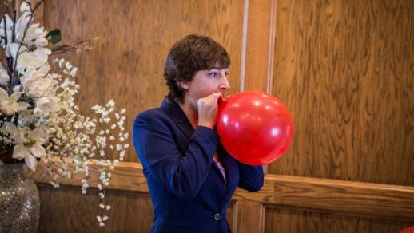

EVENTS
- Letter to Supporters
- 24-Hour Bus Tour
- City Council Debate
- Community Stew-Off
- Rally at the Senior Center
- Bowling with Leslie Knope
- Rally at the Pawnee Sports Building
TAKE ACTION
SUPPORT LESLIE
CAMPAIGN ISSUES
Recent Updates
What Should Councilwoman Knope Fix First?
Newly-elected City Councilwoman Leslie Knope won't be sworn into office for a few months, but she's keeping her promise.... More »
Featured